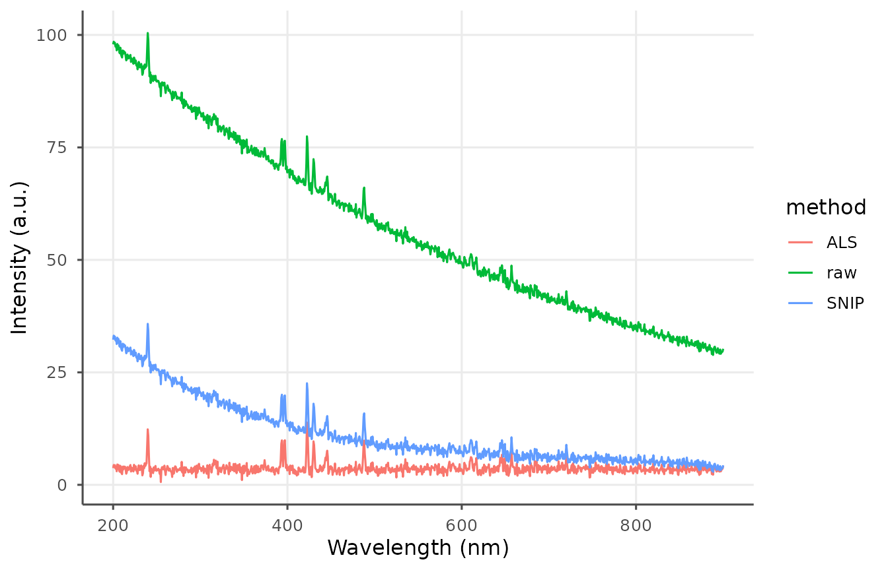
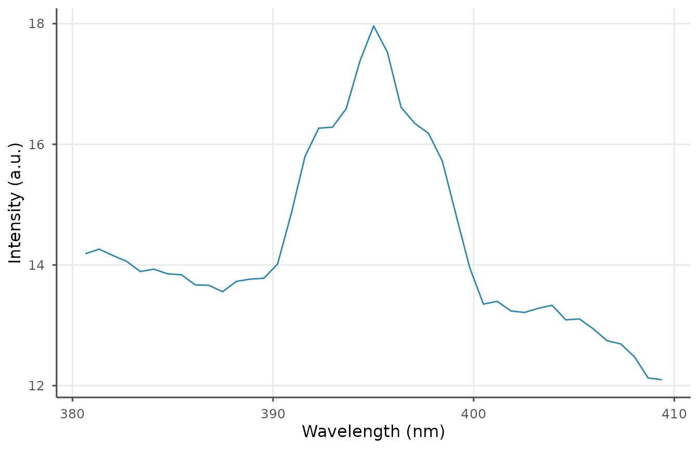
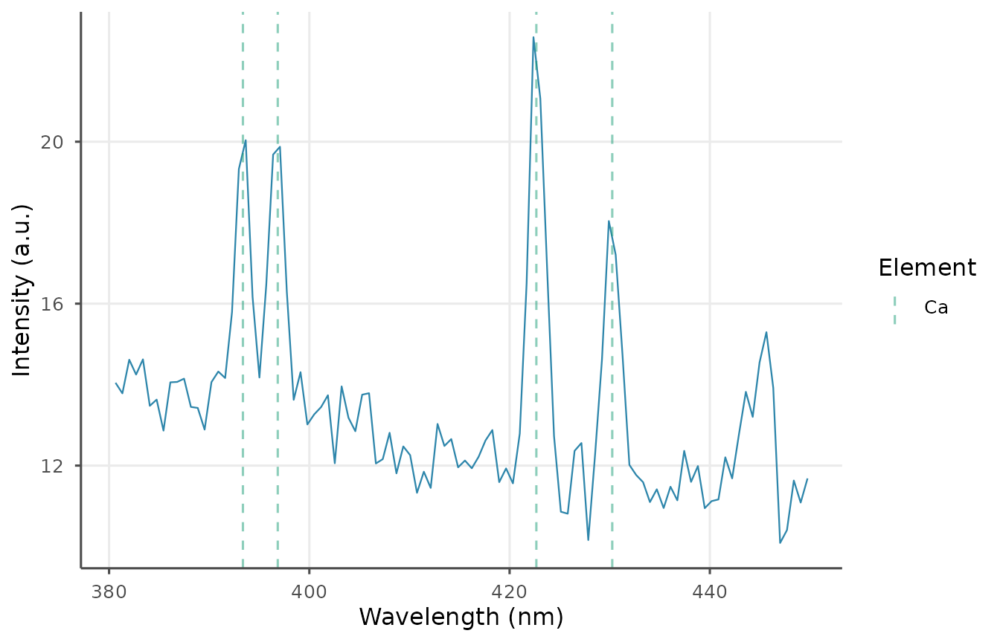
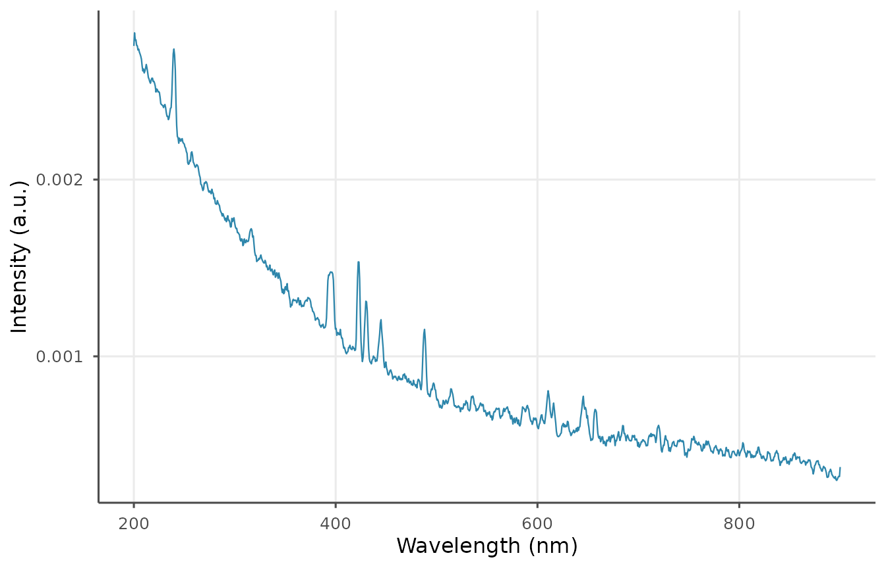

LIBS spectra typically contain a continuum background, electronic
noise, and shot-to-shot intensity variation. libscanR
provides chainable preprocessing primitives: baseline correction,
normalization, smoothing, cropping, and shot averaging.
Baseline correction
Four methods are supported: snip, als,
rolling_ball, linear, polynomial.
SNIP and ALS are the workhorses for LIBS continuum removal.
spec <- ls_simulate_spectrum(
elements = c(Ca = 5000, Na = 1000, K = 800, Fe = 200),
n_channels = 1024, seed = 1
)
snip <- ls_baseline(spec, method = "snip", iterations = 60)
als <- ls_baseline(spec, method = "als", iterations = 10, lambda = 1e5)
df <- rbind(
data.frame(w = spec$wavelength,
y = libscanR:::.mean_intensity(spec),
method = "raw"),
data.frame(w = spec$wavelength,
y = libscanR:::.mean_intensity(snip),
method = "SNIP"),
data.frame(w = spec$wavelength,
y = libscanR:::.mean_intensity(als),
method = "ALS")
)
ggplot2::ggplot(df, ggplot2::aes(w, y, colour = method)) +
ggplot2::geom_line() + theme_libs() +
ggplot2::labs(x = "Wavelength (nm)", y = "Intensity (a.u.)")
Normalization
Five options:
norm_total <- ls_normalize(snip, method = "total")
cat("sum after total normalization:",
round(sum(norm_total$intensity[1, ]), 2), "\n")
#> sum after total normalization: 1
norm_is <- ls_normalize(snip, method = "internal_std", ref_wavelength = 589)Smoothing
sm <- ls_smooth(snip, method = "moving_avg", window = 7)
ls_plot_region(sm, 380, 410)
Averaging replicate shots with outlier removal
multi <- ls_simulate_spectrum(seed = 1, n_channels = 512, n_shots = 20,
noise_level = 0.05)
avg <- ls_average_shots(multi, remove_outliers = TRUE)
avg$n_shots
#> [1] 1Cropping
ca_region <- ls_crop(snip, 380, 450)
ls_plot_spectrum(ca_region, show_elements = "Ca")
Recommended pipeline
processed <- spec |>
ls_baseline(method = "snip", iterations = 60) |>
ls_smooth(method = "moving_avg", window = 5) |>
ls_normalize(method = "total")
ls_plot_spectrum(processed)